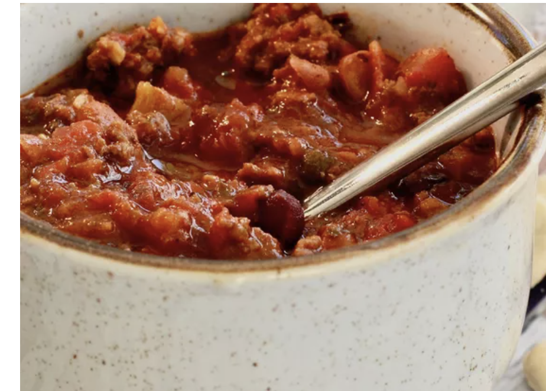

Chili Recipe
 Ingredients needed
- 2 lbs of ground beef
- 1 can of tomato juice
- 1 can of tomato sauce
- 1 can of dried kidney beans
- 1 can of pinto beans
- 1 1/2 cup of chopped onions
- 1/4 cup of green bell peppers
- 1/4 cup of chili powder
- 1 1/2 teaspoon of ground cumin
- 1 teaspoon of table salt
- 1/2 cup of white sugar
- 1/2 tablespoon dried oregano
- 1/2 teaspoon of black pepper
- 1/8 teaspoon of cayene pepper
Cooking instructions
- Heat a large skillet over medium-high heat. Cook and stir ground beef in the hot skillet until browned and crumbly, 5 to 7 minutes Drain and discard grease.
- Transfer browned beef into a large pot over medium heat; stir in tomato juice, tomato sauce, kidney beans, pinto beans, onions, bell pepper, chili powder, cumin, salt, sugar, oregano, ground black pepper, and cayenne pepper. Bring to a boil; reduce heat to low and simmer for 1 1/2 hours.
Alternate cooking instruction w/ crockpot
- Transfer browned ground beef into a slow cooker; stir in tomato juice, tomato sauce, kidney beans, pinto beans, onions, bell pepper, chili powder, cumin, salt, sugar, oregano, ground black pepper, and cayenne pepper. Cover and cook on Low for 8 to 10 hours.